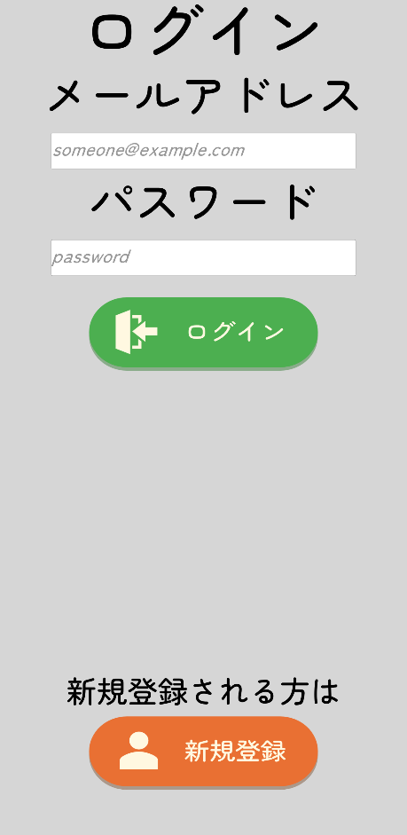
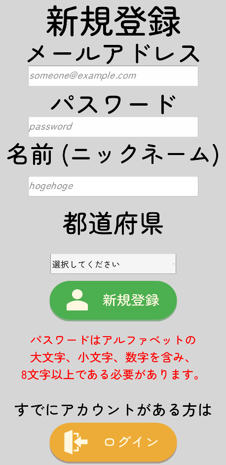
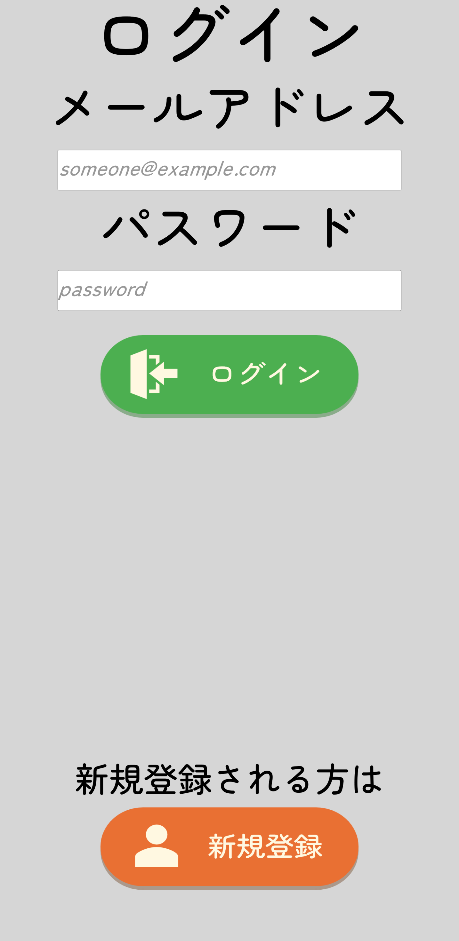
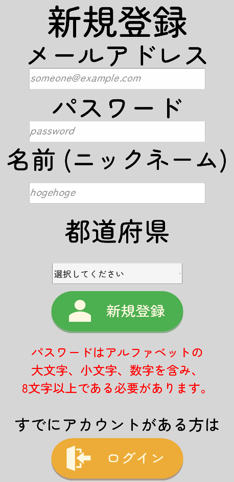

プロジェクト概要
主な特徴
- 環境問題への意識向上を目的とした教育的ゲームデザイン
- AR技術を活用し、現実空間のごみを処分するとゲームが発展するシステム
- 「島」の発展を軸にした育成ゲーム風のゲームサイクル
- Firebaseを活用したユーザ認証 (ログオン / ログイン機能)
- 4人チームでの共同開発によるGitを用いたバージョン管理
作品について
Pick & Seeは、高専プログラミングコンテスト 第36回松江大会 課題部門に出場するために4人チームで共同開発した3Dゲームです。 UnityとC#、そしてAR技術を組み合わせて開発しました。
スマートフォンゲームが身近な存在である生徒や学生達の環境問題への意識向上を目的としています。 ゲームシステムは「自身の『島』の発展」という育成ゲーム要素を中心に設計しており、 プレイを通して自然と環境問題について考えるきっかけを提供します。
環境問題への取り組みとして、ポイ捨てされているごみに着目しました。 ユーザは現実世界のごみの写真を投稿し、AR空間上に自分の好きなアイテムを置くことができます。 他人はその場所でAR空間上にあるアイテムとごみの写真を見ることができ、置いてあるアイテムを自分の島に持ち帰ることもできます。 現実世界でのごみ拾いがゲームの進行につながるという仕組みを実現しています。
ごみ拾いだけではなく、もっと深く環境問題について知識を増やしてほしいと考え、ゲーム内には自身の環境的な行動に関するミッションを設けました。 ミッションには「今日のミッション」、「今週のミッション」としてそれぞれ6つずつ用意しました。 「今日のミッション」では、1日のうちに達成できるような簡単な内容を、「今週のミッション」では、1週間かけて達成するような少し難しい内容を設定しました。 これらのミッションには個別にポイントが割り振られており、このポイントを集めることで島の発展に必要なアイテムを獲得できるようにしました。
バックエンドにはFirebaseを利用し、ユーザのログオン・ログイン処理やデータの保存を行いました。 チーム開発ではGitとGitHubを活用してバージョン管理を行い、効率的な開発体制を実現しました。
自分の担当した部分
このプロジェクトでは、Firebaseでのアカウント管理とともに、ログイン/新規登録画面の作製を主に行いました。 ユーザが安全にアカウントを作成・管理できるよう、Firebase Authentication を活用した認証システムを実装しました。 また、ログイン/新規登録画面のUIの設計から実装まで一貫して担当し、直感的で使いやすいログイン体験を提供することにこだわりました。
ユーザの情報の管理(島の情報やミッションの達成状況など)もFirebase Firestoreを用いて実装しました。 ユーザがアイテムの配置などの操作をするたびに、Firestoreからユーザのデータを取得し、ゲーム内での進行状況や島の状態を反映させる仕組みを構築しました。
ソースコード紹介
using System.Collections;
using System.Collections.Generic;
using UnityEngine;
using Firebase;
using Firebase.Auth;
using Firebase.Firestore;
using System.Threading.Tasks;
using UnityEngine.UI;
using Firebase.Extensions;
using System;
using System.Linq;
[FirestoreData]
public class UserInfo
{
[FirestoreProperty]
public string name { get; set; }
[FirestoreProperty]
public int points { get; set; }
[FirestoreProperty]
public int prefecture { get; set; }
[FirestoreProperty]
public int score { get; set; }
}
public class AuthenticationManager : MonoBehaviour
{
public static AuthenticationManager instance;
public FirebaseAuth auth;
public FirebaseFirestore firestore;
public UserInfo CurrentUserInfo { get; private set; }
public string userID => user?.UserId;
public string userName => CurrentUserInfo?.name;
public FirebaseUser user { get; private set; }
void Awake()
{
if (instance == null)
{
instance = this;
DontDestroyOnLoad(this.gameObject);
InitializeFirebase();
}
else
{
Destroy(this.gameObject);
}
}
private void InitializeFirebase()
{
FirebaseApp.CheckAndFixDependenciesAsync().ContinueWithOnMainThread(task =>
{
if (task.Result == DependencyStatus.Available)
{
Debug.Log("Firebase is ready.");
FirebaseApp app = FirebaseApp.DefaultInstance;
firestore = FirebaseFirestore.DefaultInstance;
auth = FirebaseAuth.DefaultInstance;
if (auth.CurrentUser != null)
{
user = auth.CurrentUser;
Debug.Log($"既存のセッションを再利用します。 UserID: {user.UserId}");
FetchCurrentUserInfoAsync();
}
}
else
{
Debug.LogError($"Could not resolve all Firebase dependencies: {task.Result}");
}
});
}
public void ClearLoginState()
{
user = null;
CurrentUserInfo = null;
Debug.Log("AuthenticationManagerのログイン状態をクリアしました。");
}
public async Task<UserInfo> FetchCurrentUserInfoAsync()
{
if (auth.CurrentUser == null || firestore == null) { return null; }
string uid = auth.CurrentUser.UserId;
DocumentReference docRef = firestore.Collection("userInfo").Document(uid);
try
{
DocumentSnapshot snapshot = await docRef.GetSnapshotAsync();
if (snapshot.Exists)
{
CurrentUserInfo = snapshot.ConvertTo<UserInfo>();
Debug.Log($"ユーザー情報を取得しました: {CurrentUserInfo.name}");
return CurrentUserInfo;
}
else
{
Debug.LogWarning($"Firestoreにユーザー情報が見つかりません。UID: {uid}");
return null;
}
}
catch (Exception ex)
{
Debug.LogError("ユーザー情報の取得中にエラーが発生しました: " + ex);
return null;
}
}
public async Task SignUpAsync(string email, string password, string name, int prefectureNumber)
{
if (string.IsNullOrEmpty(email) || string.IsNullOrEmpty(password) || string.IsNullOrEmpty(name) || prefectureNumber == 0)
{
Debug.LogWarning("すべての項目を入力してください。");
throw new System.ArgumentException("入力が不十分です。");
}
try
{
AuthResult authResult = await auth.CreateUserWithEmailAndPasswordAsync(email, password);
user = authResult.User;
string uid = user.UserId;
UserInfo newUserInfo = new UserInfo
{
name = name,
prefecture = prefectureNumber,
score = 0,
points = 0
};
await firestore.Collection("userInfo").Document(uid).SetAsync(newUserInfo);
Debug.Log("Firestoreにユーザー情報を登録しました。");
}
catch (System.Exception ex)
{
Debug.LogError("SignUpAsync encountered an error: " + ex);
throw;
}
}
public void UserLogin(string email, string password, System.Action<bool> callback)
{
if (auth == null)
{
Debug.LogError("FirebaseAuth is not initialized.");
callback?.Invoke(false);
return;
}
auth.SignInWithEmailAndPasswordAsync(email, password).ContinueWithOnMainThread(authTask =>
{
if (authTask.IsCanceled || authTask.IsFaulted)
{
Debug.LogWarning("Login failed: " + authTask.Exception);
callback?.Invoke(false);
return;
}
user = authTask.Result.User;
Debug.Log("Login successful. UID: " + user.UserId);
FetchCurrentUserInfoAsync().ContinueWithOnMainThread(fetchTask =>
{
if (fetchTask.IsCanceled || fetchTask.IsFaulted)
{
Debug.LogError("Login succeeded, but failed to fetch user info: " + fetchTask.Exception);
callback?.Invoke(false);
return;
}
Debug.Log("Successfully fetched user info.");
callback?.Invoke(true);
});
});
}
public async Task AddUserPointsAsync(int pointsToAdd)
{
if (auth.CurrentUser == null || firestore == null) return;
string uid = auth.CurrentUser.UserId;
DocumentReference docRef = firestore.Collection("userInfo").Document(uid);
Dictionary<string, object> updates = new Dictionary<string, object>
{ { "points", FieldValue.Increment(pointsToAdd) } };
try
{
await docRef.UpdateAsync(updates);
Debug.Log($"ユーザー(UID: {uid})に {pointsToAdd} ポイント加算しました。");
}
catch (Exception ex)
{
Debug.LogError($"ポイントの加算中にエラーが発生しました: {ex}");
throw;
}
}
public async Task AddUserScoreAsync(int scoreToAdd)
{
if (auth.CurrentUser == null || firestore == null) return;
string uid = auth.CurrentUser.UserId;
DocumentReference docRef = firestore.Collection("userInfo").Document(uid);
Dictionary<string, object> updates = new Dictionary<string, object>
{ { "score", FieldValue.Increment(scoreToAdd) } };
try
{
await docRef.UpdateAsync(updates);
Debug.Log($"ユーザー(UID: {uid})に {scoreToAdd} スコア加算しました。");
}
catch (Exception ex)
{
Debug.LogError($"スコアの加算中にエラーが発生しました: {ex}");
throw;
}
}
}(一部抜粋)
解説
AuthenticationManager は、Firebaseを使用したユーザー認証とデータ管理を一元的に行うコアスクリプトです。 シングルトンパターンで実装しており、アプリケーション全体で唯一のインスタンスとして機能します。 新規登録 (SignUpAsync) 、ログイン (UserLogin) 、ユーザー情報の取得 (FetchCurrentUserInfoAsync) などの主要な認証機能を備えています。
AddUserPointsAsync と AddUserScoreAsync メソッドでは、 ユーザーがミッションを完了したときやゲーム内の操作をしたときに、Firestoreのデータを原子性 (Atomicity) を守りながら更新します。
using UnityEngine;
using UnityEngine.UI;
using UnityEngine.SceneManagement;
using TMPro;
public class LoginUI : MonoBehaviour
{
[Header("Register UI Components")]
[SerializeField] private TMP_InputField emailRegisterInput;
[SerializeField] private TMP_InputField passwordRegisterInput;
[SerializeField] private TMP_InputField nameRegisterInput;
[SerializeField] private TMP_Dropdown prefectureRegisterSelected;
[SerializeField] private Button registerButton;
[SerializeField] private TMP_Text registerErrorText;
[Header("Login UI Components")]
[SerializeField] private TMP_InputField emailLoginInput;
[SerializeField] private TMP_InputField passwordLoginInput;
[SerializeField] private Button loginButton;
[SerializeField] private TMP_Text loginErrorText;
[Header("Navigation Buttons")]
[SerializeField] private Button changeToLoginButton;
[SerializeField] private Button changeToRegisterButton;
[Header("UI Panels")]
[SerializeField] private GameObject loginPanel;
[SerializeField] private GameObject registerPanel;
void Awake()
{
SetupReferences();
}
void Start()
{
// パネルの初期状態を設定
if (loginPanel != null) loginPanel.SetActive(true);
if (registerPanel != null) registerPanel.SetActive(false);
// エラーテキストの初期設定
if (registerErrorText != null)
{
registerErrorText.text = "パスワードはアルファベットの\n大文字、小文字、数字を含み、\n8文字以上である必要があります。";
registerErrorText.color = Color.red;
}
if (registerButton != null) registerButton.onClick.AddListener(OnRegisterButtonClicked);
if (loginButton != null) loginButton.onClick.AddListener(OnLoginButtonClicked);
if (changeToLoginButton != null) changeToLoginButton.onClick.AddListener(ToLoginPanel);
if (changeToRegisterButton != null) changeToRegisterButton.onClick.AddListener(ToResisiterPanel);
}
private void SetupReferences()
{
loginPanel = GameObject.Find("LoginPanel").gameObject;
registerPanel = GameObject.Find("SignUpPanel").gameObject;
// ログイン関連UIの取得
if (loginPanel != null)
{
emailLoginInput = loginPanel.transform.Find("EmailInputField").GetComponent<TMP_InputField>();
passwordLoginInput = loginPanel.transform.Find("PasswordInputField").GetComponent<TMP_InputField>();
loginButton = loginPanel.transform.Find("LoginSubmit").GetComponent<Button>();
loginErrorText = loginPanel.transform.Find("TextForLoginError").GetComponent<TMP_Text>();
changeToRegisterButton = loginPanel.transform.Find("ChangeResisterBtn").GetComponent<Button>();
}
else
{
Debug.LogError("LoginPanelが見つかりません！");
}
// 新規登録関連UIの取得
if (registerPanel != null)
{
emailRegisterInput = registerPanel.transform.Find("EmailInputField").GetComponent<TMP_InputField>();
passwordRegisterInput = registerPanel.transform.Find("PasswordInputField").GetComponent<TMP_InputField>();
nameRegisterInput = registerPanel.transform.Find("NameInputField").GetComponent<TMP_InputField>();
prefectureRegisterSelected = registerPanel.transform.Find("SelectPrefecture").GetComponent<TMP_Dropdown>();
registerButton = registerPanel.transform.Find("SignUpSubmit").GetComponent<Button>();
registerErrorText = registerPanel.transform.Find("TextForRegisterError").GetComponent<TMP_Text>();
changeToLoginButton = registerPanel.transform.Find("ChangeLoginBtn").GetComponent<Button>();
}
else
{
Debug.LogError("RegisterPanel (SignUpPanel)が見つかりません！");
}
}
public async void OnRegisterButtonClicked()
{
registerErrorText.text = ""; // エラーメッセージをリセット
Debug.Log("登録ボタンがクリックされました。");
try
{
await AuthenticationManager.instance.SignUpAsync(
emailRegisterInput.text,
passwordRegisterInput.text,
nameRegisterInput.text,
prefectureRegisterSelected.value
);
Debug.Log("登録が完了しました！");
SceneManager.LoadScene("TEST_MainGame");
}
catch (System.Exception ex)
{
Debug.LogError("登録に失敗しました: " + ex.Message);
registerErrorText.color = Color.black;
registerErrorText.text = "登録に失敗しました。\nもう一度お試しください。";
}
}
public void OnLoginButtonClicked()
{
loginErrorText.text = ""; // エラーメッセージをリセット
AuthenticationManager.instance.UserLogin(emailLoginInput.text, passwordLoginInput.text, success =>
{
if (success)
{
Debug.Log("ログイン完了！メインシーンへ。");
SceneManager.LoadScene("TEST_MainGame"); // メインシーン読み込み
}
else
{
loginErrorText.text = "メールアドレス、\nパスワードのどちらか、\nまたは両方が間違っています。";
}
});
}
public void ToResisiterPanel() // ログイン画面から登録画面への遷移
{
loginPanel.SetActive(false);
registerPanel.SetActive(true);
}
public void ToLoginPanel() // 登録画面からログイン画面への遷移
{
loginPanel.SetActive(true);
registerPanel.SetActive(false);
}
void OnDestroy()
{
if (registerButton != null) registerButton.onClick.RemoveListener(OnRegisterButtonClicked);
if (loginButton != null) loginButton.onClick.RemoveListener(OnLoginButtonClicked);
if (changeToLoginButton != null) changeToLoginButton.onClick.RemoveListener(ToLoginPanel);
if (changeToRegisterButton != null) changeToRegisterButton.onClick.RemoveListener(ToResisiterPanel);
}
}解説
LoginUI は、ログイン・新規登録画面のUIロジックを管理するスクリプトです。 ログインパネルと登録パネルの表示切替、各種入力フィールドの管理、ボタンイベントの処理を担当しています。
SetupReferences メソッドで、シーン内のUIコンポーネントを動的に取得し、スクリプト内で参照にしています。 OnRegisterButtonClicked と OnLoginButtonClicked は、 それぞれ登録ボタンとログインボタンが押された時の処理を実行し、AuthenticationManager を呼び出して認証を行います。 成功時はメインゲームシーンへ遷移し、失敗時はエラーメッセージを表示します。